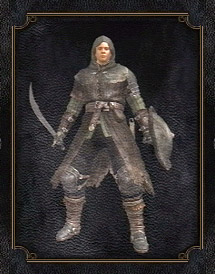

Em Dark Souls Remastered, os jogadores assumem a pele dos mortos-vivos, navegando no traiçoeiro mundo de Lordran. O jogo mantém a sua reputação de dificuldade elevada e história profunda, oferecendo uma experiência rica e envolvente para os jogadores desfrutarem. Tal como no original, os jogadores terão de atravessar uma série de ambientes interligados, cada um repleto de uma variedade de inimigos e chefes. A jogabilidade gira em torno do combate estratégico, da exploração e da recolha de almas para melhorar a personagem e o equipamento do jogador.

Os Undead (mortos-vivos) são humanos afligidos por uma maldição que os traz de volta à vida sempre
que morrem, mas gradualmente corroe seu senso sobre si mesmo. Eles se assemelham a humanos, mas são
marcados pelo sinal negro, uma marca ardente que aparece em sua carne.
Quando a mente de um
morto-vivo é finalmente desgastada, ou quando ele sucumbe ao desespero e perde seu propósito, ele se
torna um Hollow sem mente. Os hollow se assemelham mais a zumbis convencionais; murchos,
enlouquecidos e movidos por seu desejo insaciável por humanidade (que é um recurso real e tangível
na série Dark Souls, possuído por todos os humanos e mortos-vivos não hollow).
Classes
| GUERREIRO | CAVALEIRO | ANDARILHO | LADRÃO | BANDIDO |
|  |  |
 |
||
| ASSASINO | FEITICEIRO | PIROMANTE | CLERICO | DEPRAVADO |
 |
 |
 |
 |
| GUERREIRO | CAVALEIRO |
| ANDARILHO | LADRÃO |
|
|
| BANDIDO | ASSASINO |
|
|
| FEITICEIRO | PIROMANTE |
|
|
| CLERICO | DEPRAVADO |
|
|
As classes em Dark Souls determinam as estatísticas e o equipamento inicial do jogador. Existem 10 classes em Dark Souls que o jogador pode escolher para começar o jogo. As classes não determinam quais as armas, itens, armaduras ou feitiços que o seu personagem pode usar, apenas determinam com o que o seu personagem vai começar no inicio jogo. A medida que você avança no jogo e sobe de nível, o seu personagem pode potencialmente assumir qualquer papel, independentemente da classe.
Bosses
| DEMÔNIO DO ASILO | DEMÔNIO TOURO | DEMÔNIO CABRA |
 |

|

|
| QUELAAG | GOLEM DE FERRO | ORNSTEIN E SMOUGH |
 |
 |
|
| LOBO CINZENTO SIF | SEATH O DESCAMADO | LORDE GWYN |
 |
| DEMÔNIO DO ASILO |
|
| DEMÔNIO TOURO |
|
|
| DEMÔNIO CABRA |
|
|
| QUELAAG |
| GOLEM DE FERRO |
|
| ORNSTEIN E SMOUGH |
|
| LOBO CINZENTO SIF |
| SEATH O DESCAMADO |
| LORDE GWYN |
|
Os bosses são inimigos únicos e poderosos em Dark Souls e Dark Souls Remastered. Derrotar os bosses afeta o mundo de Lordran, limitando as invasões de jogadores do modo online e avançando nas missões dos NPCs. Os bosses só podem ser derrotados uma vez no seu próprio mundo, mas você pode se juntar a outros jogadores e ajudá-los nas suas batalhas através da Internet. Ao derrotar um boss ele tem a chance de dropar armas especiais que só podem ser obtida no seu próprio mundo e você também pode obter uma Alma de Chefe para criar certas armas especiais durante a gameplay.